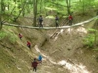
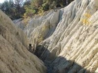

Egy vulkánkitörés konzerválta az akkori állatok lábnyomait, lehetőséget
biztosítva a ma emberének, hogy karnyújtásnyira kerüljön a számára egy
olyan világ, amikor a ma élő ember kialakulása éppen csak hogy
elkezdődött. Az időutazást 4D-s mozi, illetve a geológiai tanösvényen 3D-
s vetítés is segíti, a miocén erdőben pedig eredeti méretükben
találkozhatunk az egykor ezen a területen élt ősállatokkal – pl. a
medvekutyával, az ősvízilóval vagy éppen az ősmenyéttel, míg a
bejáratnál a Bükkábrányból előkerült 7 millió éves mocsárciprusok egy
részét is meg lehet csodálni.
A túra időtartama kb. 60-80 perc.
Eresztvény a Medves-fennsík kapuja, a látogatóközpont egy erdő közepén
található, mellette egy játszótér és a salgói vár panorámája is várja a
vendégeket.
A Medves-fennsík több mint 2 millió évvel ezelőtti vulkanizmus során
kialakult nógrád-gömöri bazaltvidék legszebb vulkáni takarója. A 12,8
négyzetkilométer területű rétegvulkáni felépítésű bazaltfennsíknak ma egy
7,8 km2-es része tartozik országunkhoz.
A terület kialakulásának és felépítésének megfelelően a földtani
tanösvényt bejárva az állomásokon a különböző kifejlődésű
lávafolyásokról és vulkáni törmelékes kőzetekről a tájékoztató táblák
segítségével juthatunk információkhoz.
Szendehely - Gyadai tanösvény

A tanösvény összesen 13 fő állomásból áll, melyek során a természeti
adottságokról és a gazdálkodásról érdekes információkhoz juthat a
kiránduló. Az állomások között is vannak további érdekességekről szóló
tájékoztató táblák. A madártani tanösvény táblái a Naszály erdeiben élő
madarakat is nagyon jól bemutatja.
A Naszály északi oldalában fekvő Gyadai-rét hazánk egyik
leghangulatosabb erdei tisztása, hajdani legelője, kaszálója. A tanösvény
egyik csúcspontja egy mély árkon átívelő impozáns függőhíd. Ez
Magyarország leghosszabb gyalogos függőhídja.
Mátraverebély – Szentkút, Remete barlangok
Mátraverebélyen található Mátraverebély Szentkút több mint nyolcszáz
éve szolgál különleges helyként a zarándokoknak.
A Szentkúton található, Basilica minor felé magasodó hegyoldalban lévő
barlangokban pálos rendű remeték éltek a 13. századtól kezdve. A
barlangok 10 összefüggő részből állnak és két kápolnát, ezek
előcsarnokát, konyhát, étkezőhelyiséget, hálóhelyiséget és illemhelyeket
foglalnak magába.
Kazár - Riolittufa

A világon mindössze 6 helyen, Európában csak Törökországban, van
hasonló geológiai képződmény. Kazáron közel 2 órás túra keretében
közelíthetjük meg a riolittufa földfelszíni megjelenését. A riolittufa egy
hektárnyi területen látható, felszíne növényzet nélküli, mélyen barázdált.
A Kazárról kivezető földút baloldalán egy érdekes földtani szelvény is
látható, amely az ottnangi emelet felső részének, a kárpáti emelet
bázisképződményeinek tanulmányozására alkalmas. A rétegekben
szívkagyló és kecskeköröm-maradványokra bukkantak.